Restauración y Modificación de Hardware Retro
Diagnóstico, reparación y mejora funcional y estética de consolas y periféricos
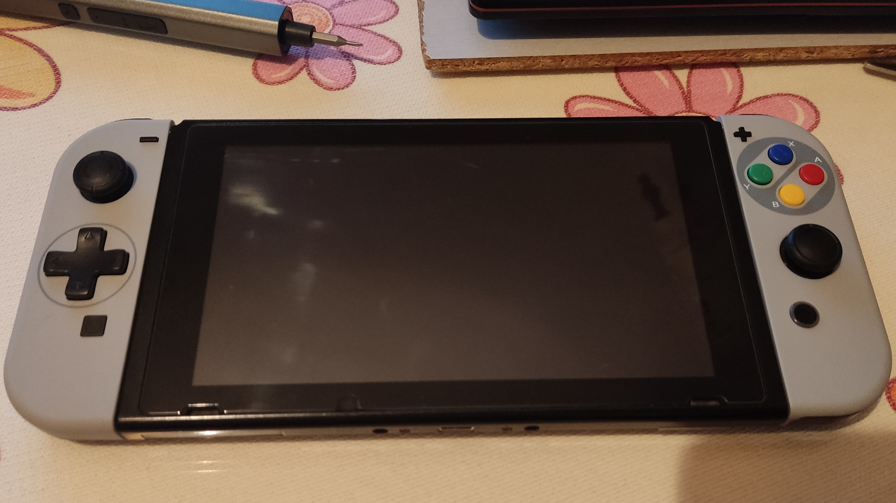
Proyecto centrado en la restauración, mantenimiento y modificación de hardware retro, aplicando procesos técnicos precisos para devolver funcionalidad, mejorar la experiencia de uso y actualizar la estética sin comprometer la integridad del dispositivo original. Este trabajo nace de la combinación entre electrónica, documentación técnica y respeto por el diseño original del hardware.
Enfoque del Proyecto
Cada dispositivo se trata como una pieza única. Antes de intervenir se realiza una evaluación completa del estado funcional, estructural y estético, priorizando siempre la conservación del hardware original y la reversibilidad de las modificaciones.
Proceso de Trabajo
1. Evaluación y diagnóstico
Comprobación del estado eléctrico, mecánico y visual del dispositivo, identificando fallos, desgaste y posibles mejoras.
2. Desmontaje controlado
Separación de componentes por módulos, organización de piezas y protección de elementos sensibles.
3. Limpieza técnica
Limpieza profunda de contactos, placas, botones y carcasas utilizando técnicas adecuadas para electrónica.
4. Intervención y modificación
Reparaciones funcionales, sustitución de componentes, transplantes de placa, mejoras estéticas y mods específicos.
5. Montaje y testing
Ensamblaje final y pruebas funcionales para verificar estabilidad, respuesta y correcto funcionamiento.
Proyectos de Reparación
Cambio de Pila en Game Boy Advance
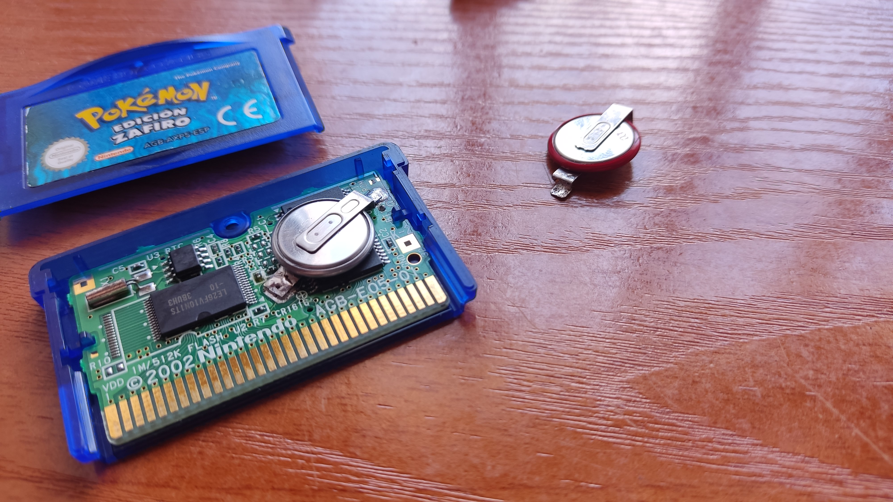
Game Boy Advance con la pila interna reemplazada para mantener las partidas guardadas.
Restauración de Cartuchos Game Boy
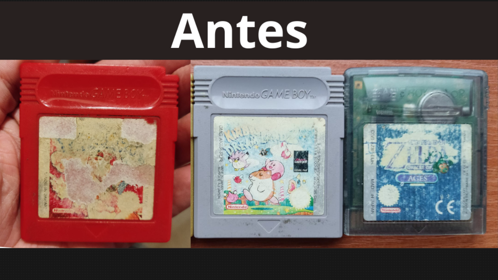
Estado del cartucho antes de la restauración, mostrando la pegatina desgastada.
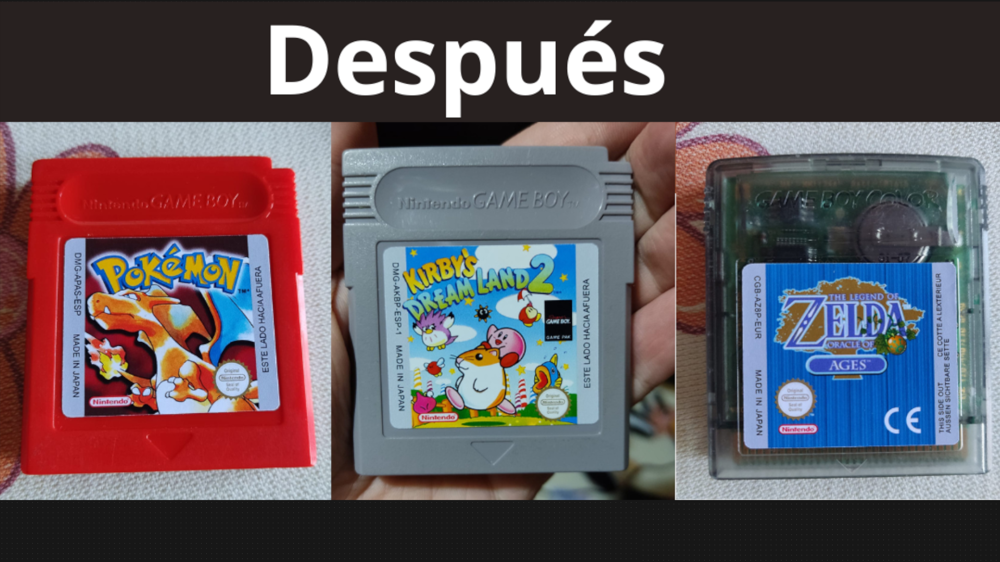
Resultado final con la nueva pegatina, devolviendo al cartucho su aspecto original.
Modding de Game Boy Advance
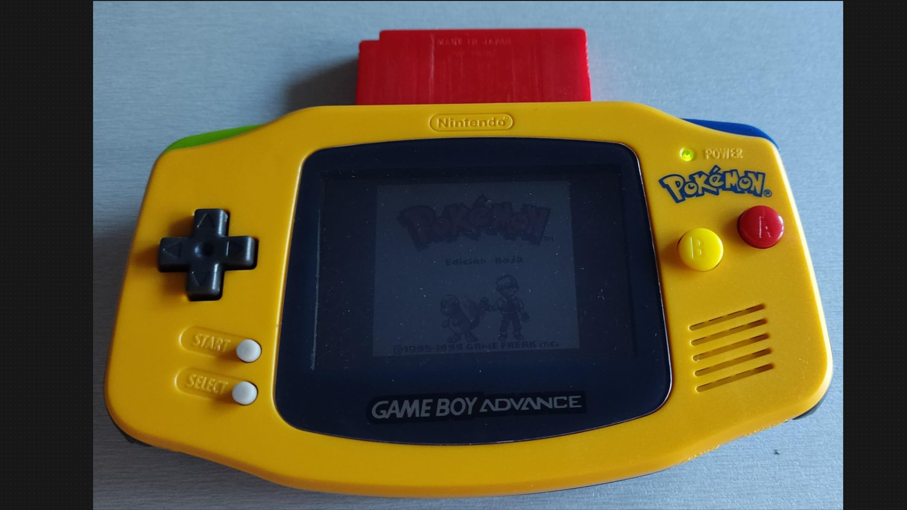
Game Boy Advance en su estado original antes de las modificaciones.
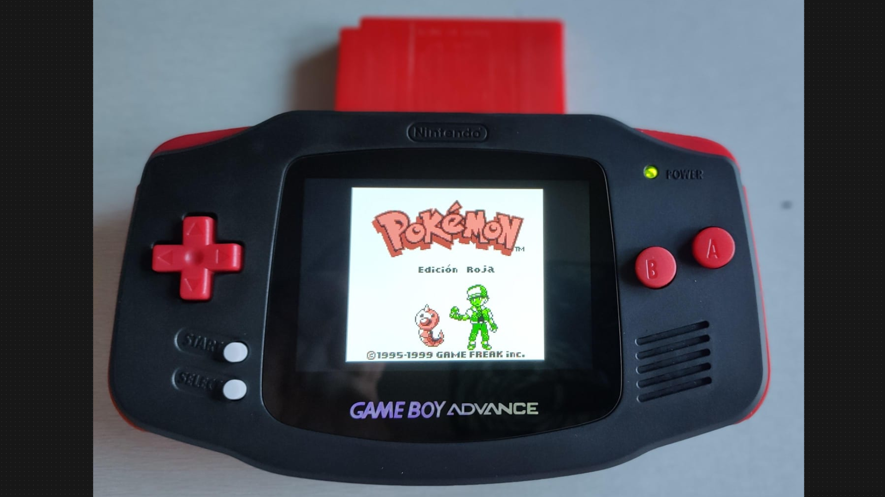
Resultado final tras el modding, con nueva carcasa y pantalla mejorada.
Transplante de Placa Base
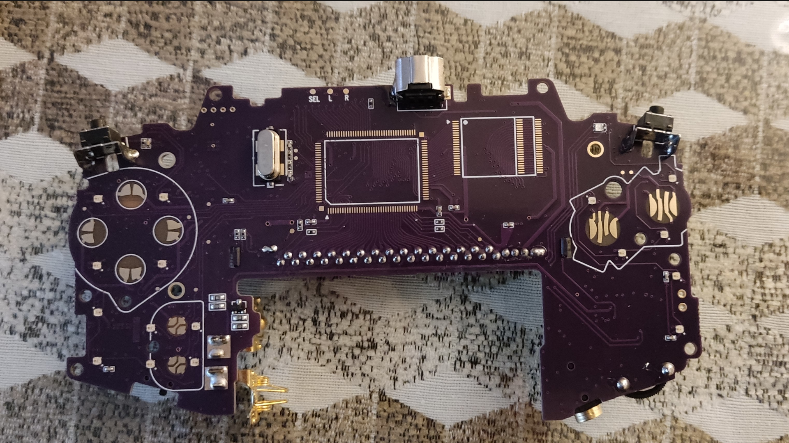
Placa base preparada para el transplante, mostrando los puntos de soldadura.
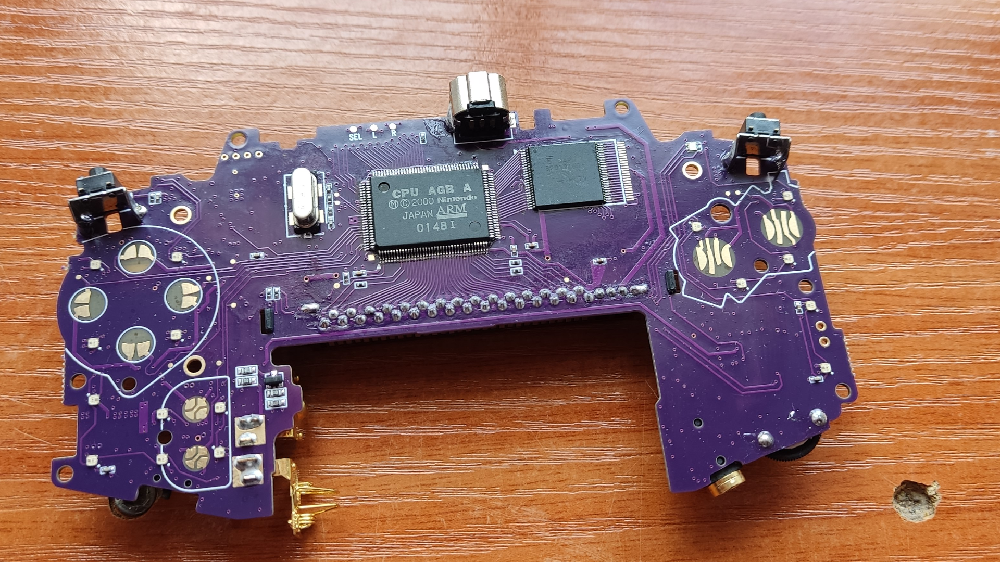
Detalle de la RAM y CPU instaladas en la nueva placa base.
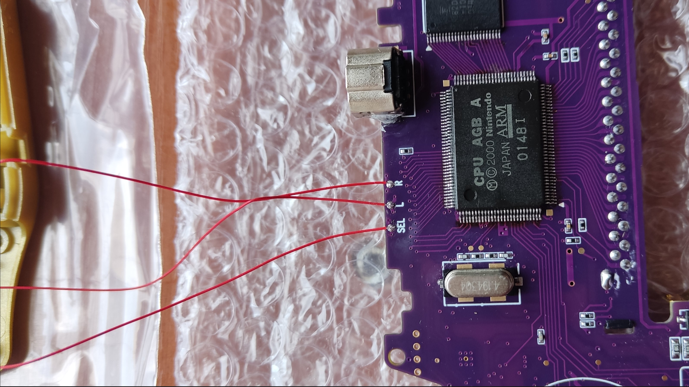
Proceso de microsoldadura para el transplante de componentes.
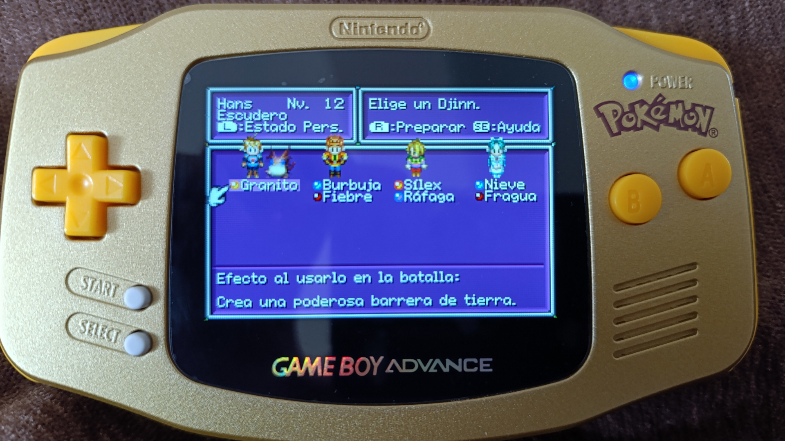
Placa funcionando correctamente después del transplante de componentes.
Reparación de Mando DualShock 4
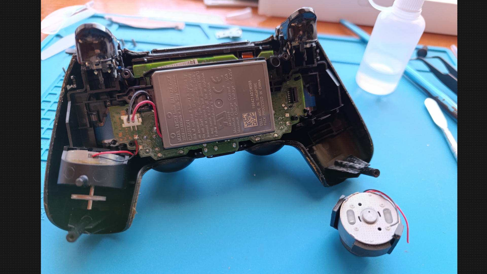
Estado inicial del DualShock 4 con daños visibles en el sistema de vibración.
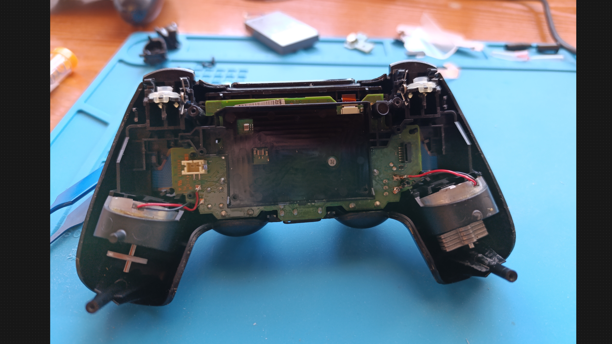
Mando completamente reparado con componentes internos renovados.
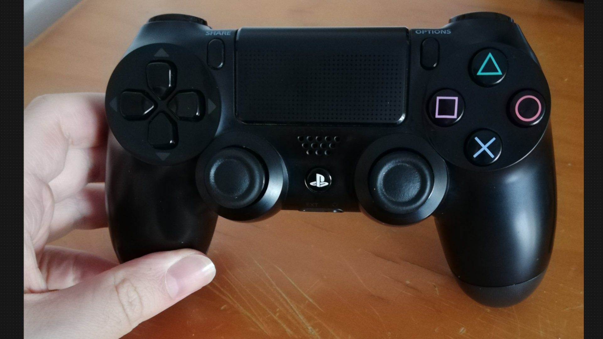
Vista final del mando completamente ensamblado y funcional.
Reparación de Joy-Con
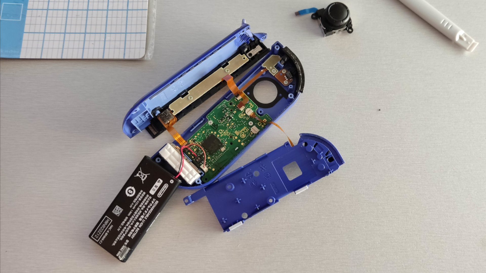
Joy-Con completamente desmontado mostrando los componentes internos.
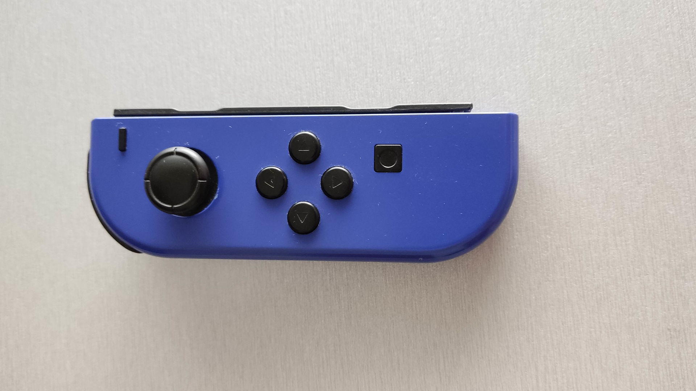
Joy-Con completamente ensamblado después de la reparación.
Desmontaje Completo de Nintendo Switch
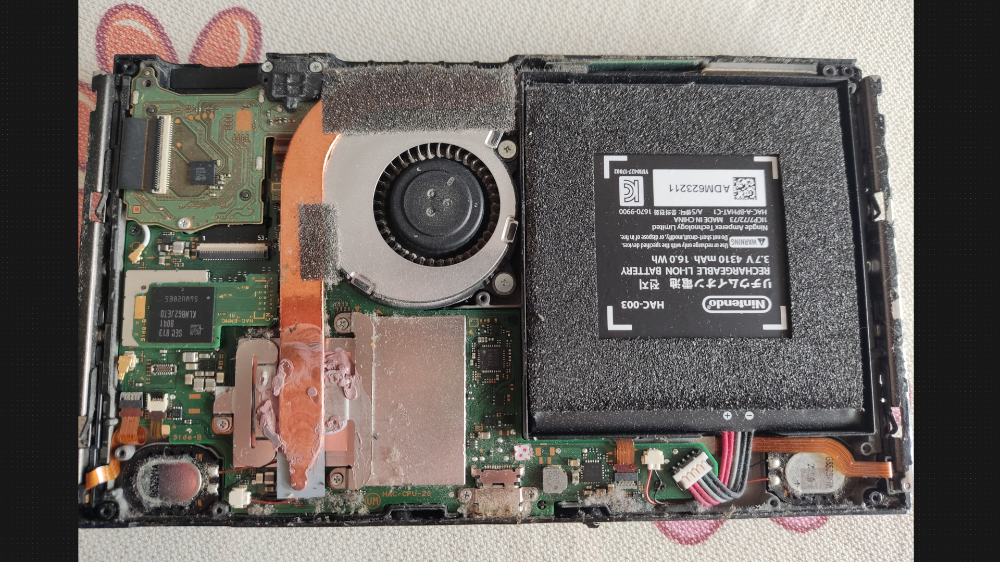
Nintendo Switch preparada para desmontaje y limpieza completa de componentes.
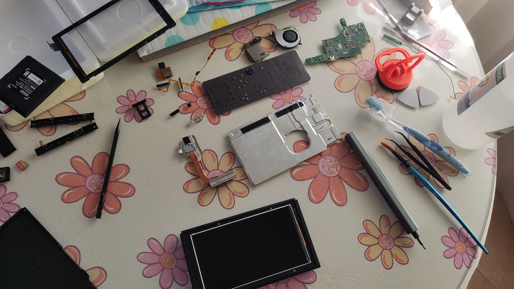
Proceso de desmontaje completo de la consola Nintendo Switch.
Consola completamente ensamblada después de la reparación y limpieza.
Intervenciones Técnicas
Transplante de placa
Sustitución y montaje de placas base, incluyendo procesos previos y posteriores al cambio de CPU y RAM.
Cambio de pila en cartuchos
Sustitución de pilas internas para la conservación de partidas y correcto funcionamiento del cartucho.
Reparación de mandos
Limpieza, restauración y montaje de mandos, mejorando respuesta y durabilidad.
Microsoldadura
Trabajo de precisión en componentes SMD y THT, incluyendo retirada y sustitución de CPU, RAM y componentes discretos en placas originales.
Diagnóstico eléctrico
Identificación de fallos mediante comprobación de continuidad, alimentación y comportamiento del circuito antes de intervenir.
Restauración estética
Sustitución de carcasas, botones y elementos externos respetando el diseño original o aplicando modificaciones personalizadas.
Resultado
El resultado es hardware plenamente funcional, estéticamente renovado y preparado para seguir utilizándose, manteniendo el espíritu original del dispositivo y mejorando la experiencia de uso.